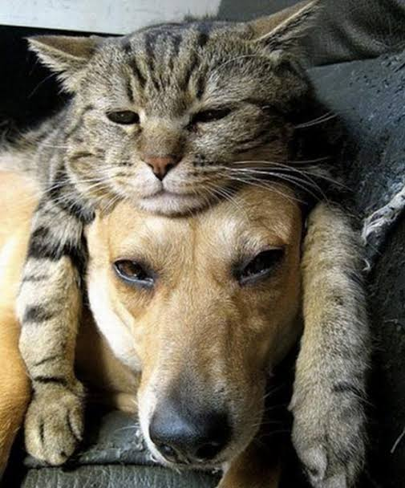
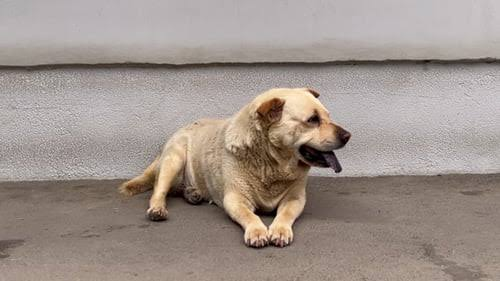
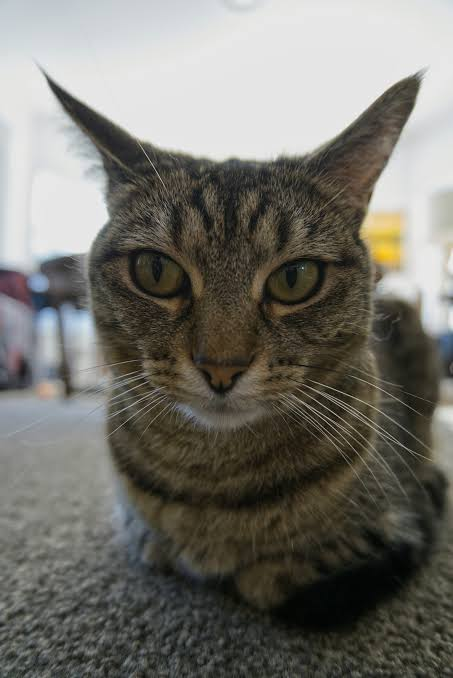
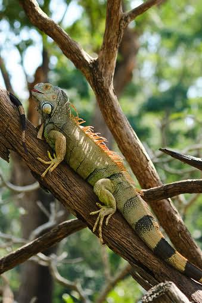

128
Bienvenido al panel del refugio
Cada vida merece una segunda oportunidad
Vida Animal reúne en un solo lugar el reporte, el seguimiento y la adopción de perros, gatos y fauna silvestre rescatados. Desde aquí puedes registrar un nuevo caso o revisar cómo avanza cada rescate.

Resumen del refugio
Cifras de referencia del prototipo.
24
En tratamiento
17
Disponibles para adopción
87
Adopciones concretadas
Casos recientes
Los últimos animales ingresados al refugio.

Luna, perra mestiza
Rescatada con una herida en la pata trasera. Recibe curaciones diarias.
En tratamiento

Michi, gato atigrado
Encontrado en una zona de construcción. Se encuentra estable y alimentándose.
Rescatado

Iguana juvenil
Reubicada tras ser hallada en un patio. Será liberada en su hábitat natural.
Reportado
Etapas del proceso de rescate
Reporte
Un ciudadano informa sobre un animal en riesgo.
Rescate
Un voluntario acude al lugar y traslada al animal.
Atención veterinaria
Se evalúa su salud y se registra el tratamiento.
Adopción
Se revisa la solicitud y se entrega al nuevo hogar.